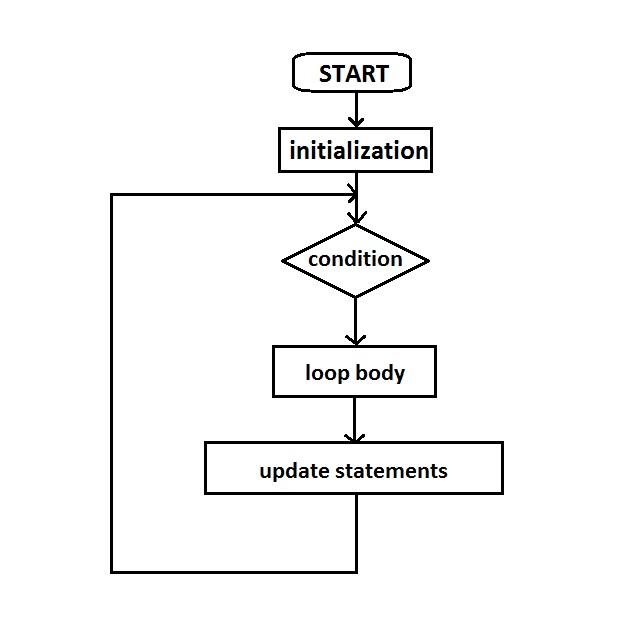

A computer program can be thought of as a sequence of instructions which are followed by a computer to solve a problem. However, the sequence in which they are written and the sequence in which they are executed may not be the same. If the execution of every program was sequential, it would run exactly the same way each time. Hence, to write programs of greater complexity, which can take decisions based on user input or values of variables, we need a decision making mechanism which can alter the sequential order of execution of statements. The order of execution of statements in a program is called Control Flow (or flow of control).
An example where we need to alter the sequential flow of control is when we want a set of instructions to be executed in one situation, and an entirely different set of instructions in another situation. A real life example of this sort of "decision-making" could be: "If the traffic light is green, keep moving;if yellow, then wait; if red, then stop". In the case of programmming, "decision-making" essentially means deciding from which statement the execution should be resumed. This decision about where the execution should be resumed is made based on the value of a variable or an expression.
The if construct excecutes a set of instructions only if a condition is true. A switching construct allows decision-making based on the state of a variable or an expression. Its purpose is to allow the value of a variable or an expression to control the flow of program execution via a multiway branch.Constructs like these can be placed inside another to create more complex flow of control. This enclosing of structures into one another is called nesting. These constructs are known as conditionals because they alter the flow of control based on a condition.
Apart from this, there is another class of constructs called loops, which can be used to repeat a set of instructions. This repetition can be done a fixed number of times or until some specific condition is met. Just like the conditionals, the loops can also be nested. Loops and conditionals can also be nested inside each other.
In this lab, we shall see the working of looping constructs.

In order to understand the working of looping constructs, it is important to understand the term block. A group of code statements that are associated and intended to be executed as a unit is referred to as a block. In C, the beginning of a block of code is denoted by writing a set of statements with in curly braces. It is not necessary to place a semicolon after the end of a block. Blocks can be left empty. A block and can be written inside another block of statements, in such a case the former block is said to be nesting inside the other block.
A loop is a construct that instructs the computer to repeatedly execute a certain block of code until a certain condition is met or for a certain fixed number of times. Every such repetition is called an iteration. Break statement can be used to exit a looping construct and a Continue statement can used to start another iteration at any point. A looping construct typically has three sections:
- An Initialization part where variables are initialized before looping is started. These are executed only once.
- A Test expression which determines when to exit the looping construct.
- An update section where variables are updated before the next iteration of the loop.
The following are the most commonly used looping constructs used in C programming:
For loop
In a for loop, the initialization, test expression and update expressions sections are written together in a single line :
for(initialization; test expression; update statements) {
statements1;
}
This improves the readability of the construct. The initialization expression is executed only once and is immediately followed by checking of the test expression. Hence, it is an entry controlled loop. If the test expression is false, then the construct is exited. So, it is possible that the statements1 may not get executed even once. If the test expression is true then statements1 are executed and it is followed by the execution of the update statements. Now, the test expression is evaluted again to check whether the loop should be exited. If not, the whole process is repeated, starting from the execution of statements1.
The sequence of execution of statements is:
- Initialization
- Test Expression
- Block Statements
- Update statements
- Test Expression
- ...
Everytime when the test expression is evaluated, if it becomes false, then the loop is exited. This image shows the steps taken for this.

While loop
While loop is another entry controlled loop. It works in a similar way as a for loop the only difference is that the initialization statements, test expression and the update statements are not written together. In fact, the update statements are written along with the block statements. The looping is terminated only when the test expression becomes false.
initialization;
while(test expression){
statements1;
update statements;
}
The sequence of execution of statements is:
- Initialization
- Test Expression
- Block Statements
- Update statements
- Test Expression
- ...
Everytime when the test expression is evaluated, if it becomes false, then the loop is exited.
Do-while loop
The the block statements in the for and while loops may not get executed at all because the test condition is checked before the execution. The Do-while loops ensure that the block statements are executed at least once, because in this the test expression is checked after doing one execution of the loop body. As usual the update statements come before the test condition loop. The following is the syntax of Do-while loops:
do{
statements1;
update statements;
}while(test expression);
The sequence of execution of statements is:
- Initialization
- Block Statements
- Update statements
- Test Expression
- Block Statements
- Update statements
- Test Expression
- ...
Important:
- Any loop can be exited at anytime by using a break statement.
- Next iteration of the loop can be started at anypoint by using the continue statement.

1. To learn how decision making is done while programming.
2. To learn about the various advanced constructs used for control flow in order to achieve repetition of instructions.


Here we shall see how various looping constructs can be used to find the factorial of a positive integer.
In the other part of the experiment, we shall see how nesting of loops can be done to create a pattern of any size that looks like a pyramid.


Procedure for the experiment is as follows.
- Choose experiment type by pressing the "Switch experiment" button on the bottom left.
Experiment 1:
- Select the looping construct with which you want to solve the problem.
- Enter the number for which factorial has to be calculated and press OK.
- Press Start to start the experiment. At any time the experiment can be restarted by pressing reset.
- Click Next to get a step by step execution of the code along with comments which are displayed at the bottom.
Experiment 2:
- Enter the height of pyramid and press OK.
- Press Start to start the experiment. At any time the experiment can be restarted by pressing reset.
- Click Next to get a step by step execution of the code along with comments which are displayed at the bottom.


- http://en.wikibooks.org/wiki/C_Programming/Control
- http://en.wikipedia.org/wiki/Control_flow
- http://www.exforsys.com/tutorials/c-language/decision-making-looping-in-c.html
- Section 3.5-3.8, The C Programming Language, Kernighan and Ritchie
- Section 6.4-6.7, Practical C Programming, Steve Qualline